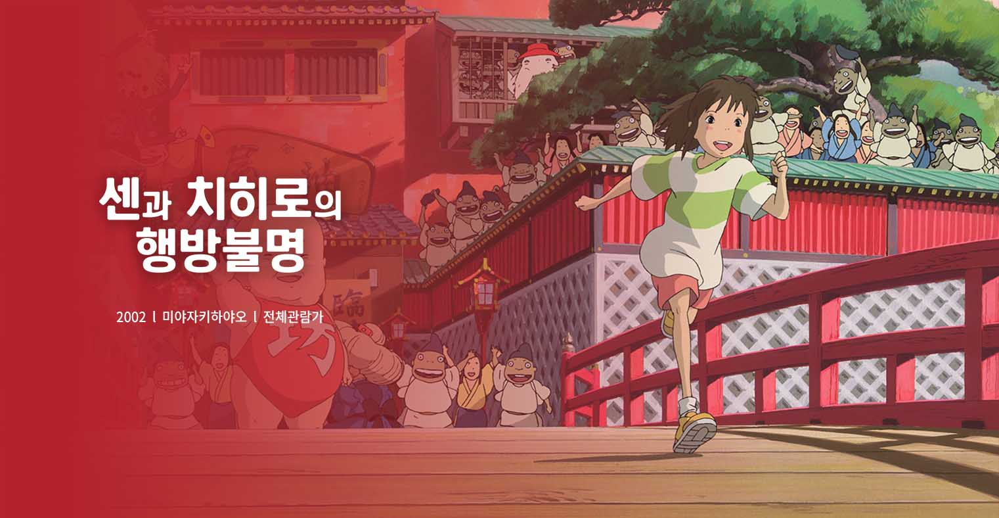
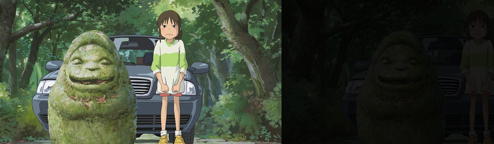
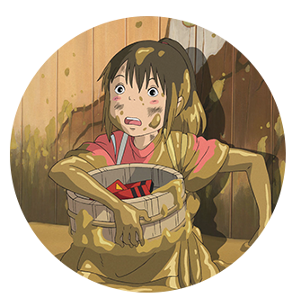
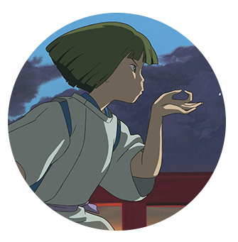
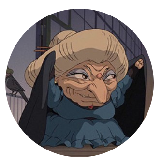

전세계를 사로잡은 환상적인 모험!
★★★★★
- 제 75회 아카데미 장편애니메이션 작품상 수상
- 제 52회 베를린 영화제 황금곰상 수상
- 제 25회 일본 아카데미상 최우수 작품상 수상
- 제 68회 뉴욕비평가협회상 애니메이션부문 수상
.
.
.

[story]
금지된 세계의 문이 열렸다! 이사 가던 날,
수상한 터널을 지
나자 인간에게는 금지된 신들의 세계로 오게 된 치히로..
신들의 음식을 먹은 치히로의 부모님은 돼지로 변해버린다.
“걱정마, 내가 꼭 구해줄게…” 겁에 질린 치히로에게 다가온
정체불명의 소년 하쿠.
그의 따뜻한 말에 힘을 얻은 치히로는
인간 세계로 돌아가기 위해 사상 초유의 미션을 시작하는데…
character
치히로(센)
어리광 많고 겁 많은 10살 소녀.
얘기치 못하게 신들의 세계에 발을 들이게 되면서
이야기를 이끌어가는 '여주인공'이다.
신들의 세계에서 많은 일들을 겪으면 스스로 성장해나간다.

하쿠
신들의 세계에 살고 있는 강의 신.
치히로를 도와주는 '남주인공'이다.
치히로에게 도움을 받기도 하고
서로 영향을 받아 같이 성장해나간다.

유바바
신들의 세계의 온천장 주인이자
욕심 많고 성질 고약한 마녀이다.
하지만 온천을 찾아온 손님에게는
한없이 친절한 캐릭터이다.
